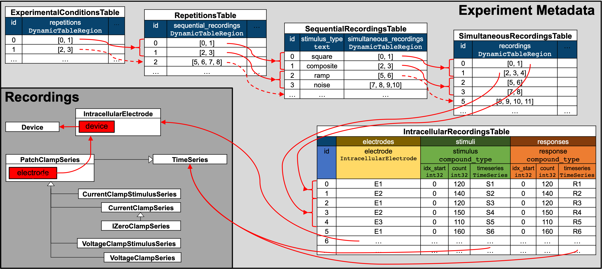
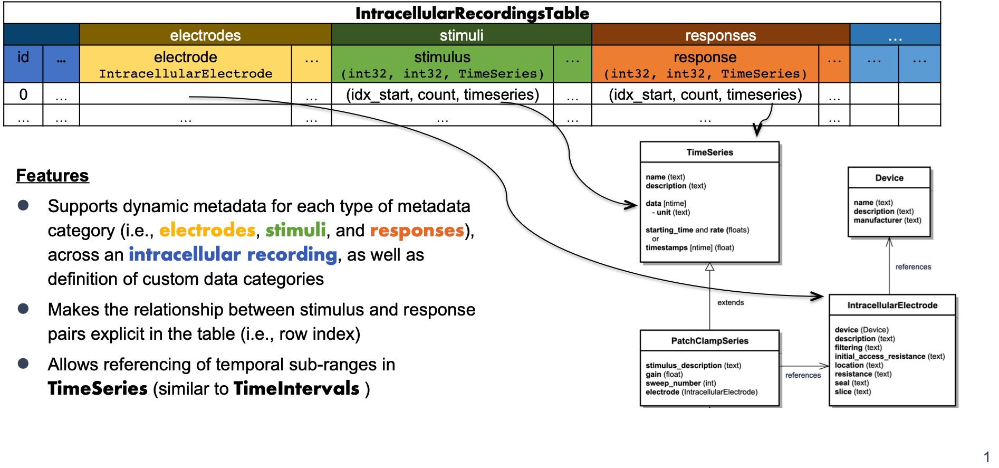

Note
Go to the end to download the full example code.
Intracellular Electrophysiology
The following tutorial describes storage of intracellular electrophysiology data in NWB. NWB supports storage of the time series describing the stimulus and response, information about the electrode and device used, as well as metadata about the organization of the experiment.
Note
For a video tutorial on intracellular electrophysiology in NWB see also the Intracellular electrophysiology basics in NWB and Intracellular ephys metadata tutorials as part of the NWB Course at the INCF Training Space.

Illustration of the hierarchy of metadata tables used to describe the organization of intracellular electrophysiology experiments.
Recordings of intracellular electrophysiology stimuli and responses are represented
with subclasses of PatchClampSeries using the
IntracellularElectrode and Device
type to describe the electrode and device used.
To describe the organization of intracellular experiments, the metadata is organized hierarchically in a sequence of tables. All of the tables are so-called DynamicTables enabling users to add columns for custom metadata.
IntracellularRecordingsTablerelates electrode, stimulus and response pairs and describes metadata specific to individual recordings.SimultaneousRecordingsTablegroups intracellular recordings from theIntracellularRecordingsTabletogether that were recorded simultaneously from different electrodes and/or cells and describes metadata that is constant across the simultaneous recordings. In practice a simultaneous recording is often also referred to as a sweep.SequentialRecordingsTablegroups simultaneously recorded intracellular recordings from theSimultaneousRecordingsTabletogether and describes metadata that is constant across the simultaneous recordings. In practice a sequential recording is often also referred to as a sweep sequence. A common use of sequential recordings is to group together simultaneous recordings where a sequence of stimuli of the same type with varying parameters have been presented in a sequence (e.g., a sequence of square waveforms with varying amplitude).RepetitionsTablegroups sequential recordings from theSequentialRecordingsTable. In practice a repetition is often also referred to a run. A typical use of theRepetitionsTableis to group sets of different stimuli that are applied in sequence that may be repeated.ExperimentalConditionsTablegroups repetitions of intracellular recording from theRepetitionsTabletogether that belong to the same experimental conditions.
Storing data in hierarchical tables has the advantage that it allows us to avoid duplication of
metadata. E.g., for a single experiment we only need to describe the metadata that is constant
across an experimental condition as a single row in the ExperimentalConditionsTable
without having to replicate the same information across all repetitions and sequential-, simultaneous-, and
individual intracellular recordings. For analysis, this means that we can easily focus on individual
aspects of an experiment while still being able to easily access information about information from
related tables.
Note
All of the above mentioned metadata tables are optional and are created automatically
by the NWBFile class the first time data is being
added to a table via the corresponding add functions. However, as tables at higher
levels of the hierarchy link to the other tables that are lower in the hierarchy,
we may only exclude tables from the top of the hierarchy. This means, for example,
a file containing a SimultaneousRecordingsTable then
must also always contain a corresponding IntracellularRecordingsTable.
Imports used in the tutorial
# Standard Python imports
from datetime import datetime
from uuid import uuid4
import numpy as np
import pandas
from dateutil.tz import tzlocal
# Set pandas rendering option to avoid very wide tables in the html docs
pandas.set_option("display.max_colwidth", 30)
pandas.set_option("display.max_rows", 10)
# Import I/O class used for reading and writing NWB files
# Import main NWB file class
from pynwb import NWBHDF5IO, NWBFile
# Import additional core datatypes used in the example
from pynwb.core import DynamicTable, VectorData
from pynwb.base import TimeSeriesReference, TimeSeriesReferenceVectorData
# Import icephys TimeSeries types used
from pynwb.icephys import VoltageClampSeries, VoltageClampStimulusSeries
A brief example
The following brief example provides a quick overview of the main steps to create an NWBFile for intracelluar electrophysiology data. We then discuss the individual steps in more detail afterwards.
# Create an ICEphysFile
ex_nwbfile = NWBFile(
session_description="my first synthetic recording",
identifier=str(uuid4()),
session_start_time=datetime.now(tzlocal()),
experimenter="Baggins, Bilbo",
lab="Bag End Laboratory",
institution="University of Middle Earth at the Shire",
experiment_description="I went on an adventure with thirteen dwarves "
"to reclaim vast treasures.",
session_id="LONELYMTN",
)
# Add a device
ex_device = ex_nwbfile.create_device(name="Heka ITC-1600")
# Add an intracellular electrode
ex_electrode = ex_nwbfile.create_icephys_electrode(
name="elec0", description="a mock intracellular electrode", device=ex_device
)
# Create an ic-ephys stimulus
ex_stimulus = VoltageClampStimulusSeries(
name="stimulus",
data=[1, 2, 3, 4, 5],
starting_time=123.6,
rate=10e3,
electrode=ex_electrode,
gain=0.02,
)
# Create an ic-response
ex_response = VoltageClampSeries(
name="response",
data=[0.1, 0.2, 0.3, 0.4, 0.5],
conversion=1e-12,
resolution=np.nan,
starting_time=123.6,
rate=20e3,
electrode=ex_electrode,
gain=0.02,
capacitance_slow=100e-12,
resistance_comp_correction=70.0,
)
# (A) Add an intracellular recording to the file
# NOTE: We can optionally define time-ranges for the stimulus/response via
# the corresponding optional _start_index and _index_count parameters.
# NOTE: It is allowed to add a recording with just a stimulus or a response
# NOTE: We can add custom columns to any of our tables in steps (A)-(E)
ex_ir_index = ex_nwbfile.add_intracellular_recording(
electrode=ex_electrode, stimulus=ex_stimulus, response=ex_response
)
# (B) Add a list of sweeps to the simultaneous recordings table
ex_sweep_index = ex_nwbfile.add_icephys_simultaneous_recording(
recordings=[
ex_ir_index,
]
)
# (C) Add a list of simultaneous recordings table indices as a sequential recording
ex_sequence_index = ex_nwbfile.add_icephys_sequential_recording(
simultaneous_recordings=[
ex_sweep_index,
],
stimulus_type="square",
)
# (D) Add a list of sequential recordings table indices as a repetition
run_index = ex_nwbfile.add_icephys_repetition(
sequential_recordings=[
ex_sequence_index,
]
)
# (E) Add a list of repetition table indices as a experimental condition
ex_nwbfile.add_icephys_experimental_condition(
repetitions=[
run_index,
]
)
# Write our test file
ex_testpath = "ex_test_icephys_file.nwb"
with NWBHDF5IO(ex_testpath, "w") as io:
io.write(ex_nwbfile)
# Read the data back in
with NWBHDF5IO(ex_testpath, "r") as io:
infile = io.read()
# Optionally plot the organization of our example NWB file
try:
import matplotlib.pyplot as plt
from hdmf_docutils.doctools.render import (
HierarchyDescription,
NXGraphHierarchyDescription,
)
ex_file_hierarchy = HierarchyDescription.from_hdf5(ex_testpath)
ex_file_graph = NXGraphHierarchyDescription(ex_file_hierarchy)
ex_fig = ex_file_graph.draw(
show_plot=False,
figsize=(12, 16),
label_offset=(0.0, 0.0065),
label_font_size=10,
)
plt.show()
except ImportError: # ignore in case hdmf_docutils is not installed
pass
Now that we have seen a brief example, we are going to start from the beginning and go through each of the steps in more detail in the following sections.
Creating an NWB file for Intracellular electrophysiology
When creating an NWB file, the first step is to create the NWBFile. The first
argument is a brief description of the dataset.
# Create the file
nwbfile = NWBFile(
session_description="my first synthetic recording",
identifier=str(uuid4()),
session_start_time=datetime.now(tzlocal()),
experimenter=[
"Baggins, Bilbo",
],
lab="Bag End Laboratory",
institution="University of Middle Earth at the Shire",
experiment_description="I went on an adventure to reclaim vast treasures.",
session_id="LONELYMTN001",
)
Device metadata
Device metadata is represented by Device objects.
To create a device, you can use the NWBFile instance method
create_device.
device = nwbfile.create_device(name="Heka ITC-1600")
Electrode metadata
Intracellular electrode metadata is represented by IntracellularElectrode objects.
To create an electrode group, you can use the NWBFile instance method
create_icephys_electrode.
electrode = nwbfile.create_icephys_electrode(
name="elec0", description="a mock intracellular electrode", device=device
)
Stimulus and response data
Intracellular stimulus and response data are represented with subclasses of
PatchClampSeries. A stimulus is described by a
time series representing voltage or current stimulation with a particular
set of parameters. There are two classes for representing stimulus data:
The response is then described by a time series representing voltage or current recorded from a single cell using a single intracellular electrode via one of the following classes:
Below we create a simple example stimulus/response recording data pair.
# Create an example icephys stimulus.
stimulus = VoltageClampStimulusSeries(
name="ccss",
data=[1, 2, 3, 4, 5],
starting_time=123.6,
rate=10e3,
electrode=electrode,
gain=0.02,
sweep_number=np.uint64(15),
)
# Create and icephys response
response = VoltageClampSeries(
name="vcs",
data=[0.1, 0.2, 0.3, 0.4, 0.5],
conversion=1e-12,
resolution=np.nan,
starting_time=123.6,
rate=20e3,
electrode=electrode,
gain=0.02,
capacitance_slow=100e-12,
resistance_comp_correction=70.0,
sweep_number=np.uint64(15),
)
You can add current clamp in the same way.
from pynwb.icephys import CurrentClampStimulusSeries, CurrentClampSeries, IZeroClampSeries
ccs = CurrentClampSeries(
name="ccs",
data=[0.1, 0.2, 0.3, 0.4, 0.5],
conversion=1e-12,
resolution=np.nan,
starting_time=123.6,
rate=20e3,
electrode=electrode,
gain=0.02,
bias_current=1e-12,
bridge_balance=70e6,
capacitance_compensation=1e-12,
sweep_number=np.uint(16)
)
ccss = CurrentClampStimulusSeries(
name="ccss",
data=[1, 2, 3, 4, 5],
starting_time=123.6,
rate=10e3,
electrode=electrode,
gain=0.02,
sweep_number=np.uint(16),
)
# IZeroClampSeries is used when the current is clamped to 0.
izcs = IZeroClampSeries(
name="izcs",
data=[0.1, 0.2, 0.3, 0.4, 0.5],
electrode=electrode,
gain=0.02,
resolution=np.nan,
conversion=1e-12,
starting_time=345.6,
rate=20e3,
sweep_number=np.uint(17),
)
Adding an intracellular recording
As mentioned earlier, intracellular recordings are organized in the
IntracellularRecordingsTable which relates electrode, stimulus
and response pairs and describes metadata specific to individual recordings.

Illustration of the structure of the IntracellularRecordingsTable
We can add an intracellular recording to the file via add_intracellular_recording.
The function will record the data in the IntracellularRecordingsTable
and add the given electrode, stimulus, or response to the NWBFile object if necessary.
Any time we add a row to one of our tables, the corresponding add function (here
add_intracellular_recording) returns the integer index of the
newly created row. The rowindex is used in subsequent tables that reference rows in our table.
rowindex = nwbfile.add_intracellular_recording(
electrode=electrode, stimulus=stimulus, response=response, id=10
)
Note
Since add_intracellular_recording can automatically add
the objects to the NWBFile we do not need to separately call
add_stimulus and add_acquisition
to add our stimulus and response, but it is still fine to do so.
Note
The id parameter in the call is optional and if the id is omitted then PyNWB will
automatically number recordings in sequences (i.e., id is the same as the rowindex)
Note
The IntracellularRecordigns, SimultaneousRecordings, SequentialRecordingsTable, RepetitionsTable and ExperimentalConditionsTable tables all enforce unique ids when adding rows. I.e., adding an intracellular recording with the same id twice results in a ValueError.
Note
We may optionally also specify the relevant time range for a stimulus and/or response as part of the intracellular_recording. This is useful, e.g., in case where the recording of the stimulus and response do not align (e.g., in case the recording of the response started before the recording of the stimulus).
rowindex2 = nwbfile.add_intracellular_recording(
electrode=electrode,
stimulus=stimulus,
stimulus_start_index=1,
stimulus_index_count=3,
response=response,
response_start_index=2,
response_index_count=3,
id=11,
)
Note
A recording may optionally also consist of just an electrode and stimulus or electrode
and response, but at least one of stimulus or response is required. If either stimulus or response
is missing, then the stimulus and response are internally set to the same TimeSeries and the
start_index and index_count for the missing parameter are set to -1. When retrieving
data from the TimeSeriesReferenceVectorData, the missing values
will be represented via masked numpy arrays, i.e., as masked values in a
numpy.ma.masked_array or as a np.ma.core.MaskedConstant.
rowindex3 = nwbfile.add_intracellular_recording(
electrode=electrode, response=response, id=12
)
Warning
For brevity we reused in the above example the same response and stimulus in all rows of the intracellular_recordings. While this is allowed, in most practical cases the stimulus and response will change between intracellular_recordings.
Adding custom columns to the intracellular recordings table
We can add a column to the main intracellular recordings table as follows.
nwbfile.intracellular_recordings.add_column(
name="recording_tag",
data=["A1", "A2", "A3"],
description="String with a recording tag",
)
The IntracellularRecordingsTable table is not just a DynamicTable
but an AlignedDynamicTable. The AlignedDynamicTable type is itself a DynamicTable
that may contain an arbitrary number of additional DynamicTable, each of which defines
a “category”. This is similar to a table with “sub-headings”. In the case of the
IntracellularRecordingsTable, we have three predefined categories,
i.e., electrodes, stimuli, and responses. We can also dynamically add new categories to
the table. As each category corresponds to a DynamicTable, this means we have to create a
new DynamicTable and add it to our table.
# Create a new DynamicTable for our category that contains a location column of type VectorData
location_column = VectorData(
name="location",
data=["Mordor", "Gondor", "Rohan"],
description="Recording location in Middle Earth",
)
lab_category = DynamicTable(
name="recording_lab_data",
description="category table for lab-specific recording metadata",
colnames=[
"location",
],
columns=[
location_column,
],
)
# Add the table as a new category to our intracellular_recordings
nwbfile.intracellular_recordings.add_category(category=lab_category)
# Note, the name of the category is name of the table, i.e., 'recording_lab_data'
Note
In an AlignedDynamicTable all category tables MUST align with the main table,
i.e., all tables must have the same number of rows and rows are expected to
correspond to each other by index
We can also add custom columns to any of the subcategory tables, i.e., the electrodes, stimuli, and responses tables, and any custom subcategory tables. All we need to do is indicate the name of the category we want to add the column to.
nwbfile.intracellular_recordings.add_column(
name="voltage_threshold",
data=[0.1, 0.12, 0.13],
description="Just an example column on the electrodes category table",
category="electrodes",
)
Adding stimulus templates
One predefined subcategory column is the stimulus_template column in the stimuli table. This column is
used to store template waveforms of stimuli in addition to the actual recorded stimulus that is stored in the
stimulus column. The stimulus_template column contains an idealized version of the template waveform used as
the stimulus. This can be useful as a noiseless version of the stimulus for data analysis or to validate that the
recorded stimulus matches the expected waveform of the template. Similar to the stimulus and response
columns, we can specify a relevant time range.
stimulus_template = VoltageClampStimulusSeries(
name="ccst",
data=[0, 1, 2, 3, 4],
starting_time=0.0,
rate=10e3,
electrode=electrode,
gain=0.02,
)
nwbfile.add_stimulus_template(stimulus_template)
nwbfile.intracellular_recordings.add_column(
name="stimulus_template",
data=[TimeSeriesReference(0, 5, stimulus_template), # (start_index, index_count, stimulus_template)
TimeSeriesReference(1, 3, stimulus_template),
TimeSeriesReference.empty(stimulus_template)], # if there was no data for that recording, use empty reference
description="Column storing the reference to the stimulus template for the recording (rows).",
category="stimuli",
col_cls=TimeSeriesReferenceVectorData
)
# we can also add stimulus template data as follows
rowindex = nwbfile.add_intracellular_recording(
electrode=electrode,
stimulus=stimulus,
stimulus_template=stimulus_template, # the full time range of the stimulus template will be used unless specified
recording_tag='A4',
recording_lab_data={'location': 'Isengard'},
electrode_metadata={'voltage_threshold': 0.14},
id=13,
)
Note
If a stimulus template column exists but there is no stimulus template data for that recording, then
add_intracellular_recording will internally set the stimulus template to the
provided stimulus or response TimeSeries and the start_index and index_count for the missing parameter are
set to -1. The missing values will be represented via masked numpy arrays.
Note
Since stimulus templates are often reused across many recordings, the timestamps in the templates are not usually aligned with the recording nor with the reference time of the file. The timestamps often start at 0 and are relative to the time of the application of the stimulus.
Add a simultaneous recording
Before adding a simultaneous recording, we will take a brief discourse to illustrate how we can add custom columns to tables before and after we have populated the table with data
Define a custom column for a simultaneous recording before populating the table
Before we add a simultaneous recording, let’s create a custom data column in our
SimultaneousRecordingsTable. We can create columns at the
beginning (i.e., before we populate the table with rows/data) or we can add columns
after we have already populated the table with rows. Here we will show the former.
For this, we first need to get access to our table.
print(nwbfile.icephys_simultaneous_recordings)
None
The SimultaneousRecordingsTable is optional, and since we have
not populated it with any data yet, we can see that the table does not actually exist yet.
In order to make sure the table is being created we can use
get_icephys_simultaneous_recordings, which ensures
that the table is being created if it does not exist yet.
icephys_simultaneous_recordings = nwbfile.get_icephys_simultaneous_recordings()
icephys_simultaneous_recordings.add_column(
name="simultaneous_recording_tag",
description="A custom tag for simultaneous_recordings",
)
print(icephys_simultaneous_recordings.colnames)
('recordings', 'simultaneous_recording_tag')
As we can see, we now have successfully created a new custom column.
Note
The same process applies to all our other tables as well. We can use the
corresponding get_intracellular_recordings,
get_icephys_sequential_recordings,
get_icephys_repetitions functions instead.
In general, we can always use the get functions instead of accessing the property
of the file.
Add a simultaneous recording
Add a single simultaneous recording consisting of a set of intracellular recordings.
Again, setting the id for a simultaneous recording is optional. The recordings
argument of the add_icephys_simultaneous_recording function
here is simply a list of ints with the indices of the corresponding rows in
the IntracellularRecordingsTable
Note
Since we created our custom simultaneous_recording_tag column earlier,
we now also need to populate this custom field for every row we add to
the SimultaneousRecordingsTable.
Note
The recordings argument is the list of indices of the rows in the
IntracellularRecordingsTable that we want
to reference. The indices are determined by the order in which we
added the elements to the table. If we don’t know the row indices,
but only the ids of the relevant intracellular recordings, then
we can search for them as follows:
temp_row_indices = nwbfile.intracellular_recordings.id == [10, 11]
print(temp_row_indices)
[0 1]
Note
The same is true for our other tables as well, i.e., referencing is
done always by indices of rows (NOT ids). If we only know ids then we
can search for them in the same manner on the other tables as well,
e.g,. via nwbfile.simultaneous_recordings.id == 15. In the search
we can use a list of integer ids or a single int.
Define a custom column for a simultaneous recording after adding rows
Depending on the lab workflow, it may be useful to add complete columns to a table after we have already populated the table with rows. We can do this the same way as before, only now we need to provide a data array to populate the values for the existing rows. E.g.:
nwbfile.icephys_simultaneous_recordings.add_column(
name="simultaneous_recording_type",
description="Description of the type of simultaneous_recording",
data=[
"SimultaneousRecordingType1",
],
)
Add a sequential recording
Add a single sequential recording consisting of a set of simultaneous recordings.
Again, setting the id for a sequential recording is optional. Also this table is
optional and will be created automatically by NWBFile. The simultaneous_recordings
argument of the add_icephys_sequential_recording function
here is simply a list of ints with the indices of the corresponding rows in
the SimultaneousRecordingsTable.
rowindex = nwbfile.add_icephys_sequential_recording(
simultaneous_recordings=[0], stimulus_type="square", id=15
)
Add a repetition
Add a single repetition consisting of a set of sequential recordings. Again, setting
the id for a repetition is optional. Also this table is optional and will be created
automatically by NWBFile. The sequential_recordings argument of the
add_icephys_repetition function here is simply
a list of ints with the indices of the corresponding rows in
the SequentialRecordingsTable.
rowindex = nwbfile.add_icephys_repetition(sequential_recordings=[0], id=17)
Add an experimental condition
Add a single experimental condition consisting of a set of repetitions. Again,
setting the id for a condition is optional. Also this table is optional and
will be created automatically by NWBFile. The repetitions argument of
the add_icephys_experimental_condition function again is
simply a list of ints with the indices of the correspondingto rows in the
RepetitionsTable.
rowindex = nwbfile.add_icephys_experimental_condition(repetitions=[0], id=19)
As mentioned earlier, to add additional columns to any of the tables, we can
use the .add_column function on the corresponding table after they have
been created.
nwbfile.icephys_experimental_conditions.add_column(
name="tag",
data=np.arange(1),
description="integer tag for a experimental condition",
)
When we add new items, then we now also need to set the values for the new column, e.g.:
rowindex = nwbfile.add_icephys_experimental_condition(repetitions=[0], id=21, tag=3)
Read/write the NWBFile
Accessing the tables
All of the icephys metadata tables are available as attributes on the NWBFile object. For display purposes, we convert the tables to pandas DataFrames to show their content. For a more in-depth discussion of how to access and use the tables, see the tutorial on Query Intracellular Electrophysiology Metadata.
pandas.set_option("display.max_columns", 6) # avoid oversize table in the html docs
nwbfile.intracellular_recordings.to_dataframe()
# optionally we can ignore the id columns of the category subtables
pandas.set_option("display.max_columns", 5) # avoid oversize table in the html docs
nwbfile.intracellular_recordings.to_dataframe(ignore_category_ids=True)
nwbfile.icephys_simultaneous_recordings.to_dataframe()
nwbfile.icephys_sequential_recordings.to_dataframe()
nwbfile.icephys_repetitions.to_dataframe()
nwbfile.icephys_experimental_conditions.to_dataframe()
Validate data
This section is for internal testing purposes only to validate that the roundtrip of the data (i.e., generate –> write –> read) produces the correct results.
# Read the data back in
with NWBHDF5IO(testpath, "r") as io:
infile = io.read()
# assert intracellular_recordings
assert np.all(
infile.intracellular_recordings.id[:] == nwbfile.intracellular_recordings.id[:]
)
# Assert that the ids and the VectorData, VectorIndex, and table target of the
# recordings column of the Sweeps table are correct
assert np.all(
infile.icephys_simultaneous_recordings.id[:]
== nwbfile.icephys_simultaneous_recordings.id[:]
)
assert np.all(
infile.icephys_simultaneous_recordings["recordings"].target.data[:]
== nwbfile.icephys_simultaneous_recordings["recordings"].target.data[:]
)
assert np.all(
infile.icephys_simultaneous_recordings["recordings"].data[:]
== nwbfile.icephys_simultaneous_recordings["recordings"].data[:]
)
assert (
infile.icephys_simultaneous_recordings["recordings"].target.table.name
== nwbfile.icephys_simultaneous_recordings["recordings"].target.table.name
)
# Assert that the ids and the VectorData, VectorIndex, and table target of the simultaneous
# recordings column of the SweepSequences table are correct
assert np.all(
infile.icephys_sequential_recordings.id[:]
== nwbfile.icephys_sequential_recordings.id[:]
)
assert np.all(
infile.icephys_sequential_recordings["simultaneous_recordings"].target.data[:]
== nwbfile.icephys_sequential_recordings["simultaneous_recordings"].target.data[
:
]
)
assert np.all(
infile.icephys_sequential_recordings["simultaneous_recordings"].data[:]
== nwbfile.icephys_sequential_recordings["simultaneous_recordings"].data[:]
)
assert (
infile.icephys_sequential_recordings[
"simultaneous_recordings"
].target.table.name
== nwbfile.icephys_sequential_recordings[
"simultaneous_recordings"
].target.table.name
)
# Assert that the ids and the VectorData, VectorIndex, and table target of the
# sequential_recordings column of the Repetitions table are correct
assert np.all(infile.icephys_repetitions.id[:] == nwbfile.icephys_repetitions.id[:])
assert np.all(
infile.icephys_repetitions["sequential_recordings"].target.data[:]
== nwbfile.icephys_repetitions["sequential_recordings"].target.data[:]
)
assert np.all(
infile.icephys_repetitions["sequential_recordings"].data[:]
== nwbfile.icephys_repetitions["sequential_recordings"].data[:]
)
assert (
infile.icephys_repetitions["sequential_recordings"].target.table.name
== nwbfile.icephys_repetitions["sequential_recordings"].target.table.name
)
# Assert that the ids and the VectorData, VectorIndex, and table target of the
# repetitions column of the Conditions table are correct
assert np.all(
infile.icephys_experimental_conditions.id[:]
== nwbfile.icephys_experimental_conditions.id[:]
)
assert np.all(
infile.icephys_experimental_conditions["repetitions"].target.data[:]
== nwbfile.icephys_experimental_conditions["repetitions"].target.data[:]
)
assert np.all(
infile.icephys_experimental_conditions["repetitions"].data[:]
== nwbfile.icephys_experimental_conditions["repetitions"].data[:]
)
assert (
infile.icephys_experimental_conditions["repetitions"].target.table.name
== nwbfile.icephys_experimental_conditions["repetitions"].target.table.name
)
assert np.all(
infile.icephys_experimental_conditions["tag"][:]
== nwbfile.icephys_experimental_conditions["tag"][:]
)